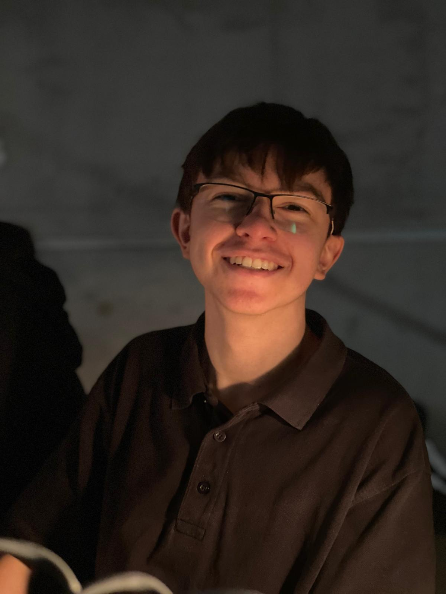

My Resume

Summary
I am a student in the "Oberstufe" High School in Germany.
I've discovered my passion for programming, when I first went to the
IT department of the Bundesagentur für Arbeit with my father. Afterwards
I just wanted to learn more an more. Now I am trying to try everything
that programming has to offer. From Web Development to Game Development and more.
After school I want to study Computer Science and beforehand I want to try
to gain as much experience as possible. Through home projects and Internships.
Thank you for reading
Education
-
2018 - now:
Gymnasium near Heidelberg, expected to
graduate in 2026 with the "Abitur"
-
2014 - 2018:
Kirchwaldschule (Primary School in the Village I live)
Work experience
-
Internship at the Aristech GmbH Heidelberg (22.4.2024 - 26.4.2024)
-
One Day Internships (part of program "Girl's and Boy's Day")
at the IT - Systembuilding of the Bundesagentur für Arbeit Nürnberg
(Class 8 + 9)
Skills
Computer Skills:
-
Knowlegde of IDES:
- VSCode (Visual Studio Code)
- IntelliJ IDEA Community Edition
- Godot 4 Game Engine
-
Knowlegde of Programming Languages:
-
Good:
-
Basic:
- CSS
- JavaScript
- Python
- YAML
-
Knowlegde of Operating Systems
-
Linux:
- Ubuntu
- XUbuntu
- Basic: Linux Server + Server Automation with Ansible
-
Mac
-
Windows
Language Skills
- German (Native Language)
- English (fluent)
- Russian (Native Level)
Links
About Me